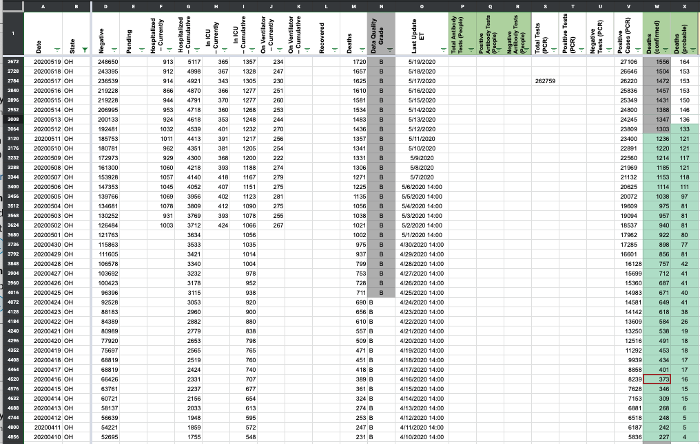

#1123: [OH] Backfill 03/03/21 Deaths (confirmed + probable)
Issue number 1123
hmhoffman opened this issue on March 3, 2021, 2:42 PM PST
State: OH
Dates affected: 03/02/21
Describe the issue: On March 2, 2021, Ohio changed the way that they report COVID-19 deaths, and updates their mortality figures twice a week as death certificate information is received and verified from the National Center for Health Statistics. As a result of this change, Deaths (confirmed + probable) decreased from 17,346 to 17,189 on March 2, 2021. To allow our data quality team time to evaluate this change, we did not record this change on March 2, 2021, and backfilled our timeseries on March 3, 2021.
Comments
#1123: [OH] Backfill 03/03/21 Deaths (confirmed + probable)
Issue number 1123
hmhoffman opened this issue on March 3, 2021, 2:42 PM PST
State: OH
Dates affected: 03/02/21
Describe the issue: On March 2, 2021, Ohio changed the way that they report COVID-19 deaths, and updates their mortality figures twice a week as death certificate information is received and verified from the National Center for Health Statistics. As a result of this change, Deaths (confirmed + probable) decreased from 17,346 to 17,189 on March 2, 2021. To allow our data quality team time to evaluate this change, we did not record this change on March 2, 2021, and backfilled our timeseries on March 3, 2021.
Comments
Rows edited: 1 OH 2021-03-02 death: 17189 (was 17346)
#1082: Removing values from the API field Negative from AK, CA, DC, GA, KY, NY, OH, OR, TX, VA and WA
Issue number 1082
jaclyde opened this issue on January 27, 2021, 3:13 PM PST
Labels Data quality
States: Alaska, California, Washington DC, Georgia, Kentucky, New York, Ohio, Oregon, Texas, Virginia, Washington
Issue: We are removing negatives that were created from mixed units (specimens minus cases or test encounters minus cases) for states that are using explicit totals in our main total test results field (called totalTestResults in the API). See the Data FAQ for additional explanation.
Comments
Alaska: Never reported negatives directly and always reported in specimens, removing total time series
Values Removed: Changes.txt
California: Never reported negatives directly, but did report in Total tests (people) until April 21, 2020. Removing time series from present to April 22, 2020.
Values Removed: Changes.txt
Washington DC: Never reported negatives directly, and has always reported encounters, removing total time series
Values Removed: Changes.txt
Georgia: Never reported negatives directly and always reported in specimens, removing total time series
Values Removed: Changes.txt
Kentucky: Never reported negatives directly and always reported in specimens, removing total time series
Values Removed: Changes.txt
New York: Never reported negatives directly and always reported in encounters, removing total time series
Values Removed: Changes.txt
Ohio: Never reported negatives directly and always reported in specimens, removing total time series
Values Removed: Changes.txt
Oregon: Never reported negatives directly, but did report in Total tests (people) until December 1, 2020. Removing time series from present to December 2, 2020.
Values Removed: Changes.txt
Texas: Never reported negatives directly and always reported in specimens, removing total time series
Values Removed: Changes.txt
Virginia: Never reported negatives directly and always reported in encounters, removing total time series
Values Removed: Changes.txt
Washington: Negatives were backfilled with values calculated from total tests (encounters)-confirmed cases in August 2020. Removing total time series.
Values Removed: Changes.txt
#1082: Removing values from the API field Negative from AK, CA, DC, GA, KY, NY, OH, OR, TX, VA and WA
Issue number 1082
jaclyde opened this issue on January 27, 2021, 3:13 PM PST
Labels Data quality
States: Alaska, California, Washington DC, Georgia, Kentucky, New York, Ohio, Oregon, Texas, Virginia, Washington
Issue: We are removing negatives that were created from mixed units (specimens minus cases or test encounters minus cases) for states that are using explicit totals in our main total test results field (called totalTestResults in the API). See the Data FAQ for additional explanation.
Comments
Alaska: Never reported negatives directly and always reported in specimens, removing total time series
Values Removed: Changes.txt
California: Never reported negatives directly, but did report in Total tests (people) until April 21, 2020. Removing time series from present to April 22, 2020.
Values Removed: Changes.txt
Washington DC: Never reported negatives directly, and has always reported encounters, removing total time series
Values Removed: Changes.txt
Georgia: Never reported negatives directly and always reported in specimens, removing total time series
Values Removed: Changes.txt
Kentucky: Never reported negatives directly and always reported in specimens, removing total time series
Values Removed: Changes.txt
New York: Never reported negatives directly and always reported in encounters, removing total time series
Values Removed: Changes.txt
Ohio: Never reported negatives directly and always reported in specimens, removing total time series
Values Removed: Changes.txt
Oregon: Never reported negatives directly, but did report in Total tests (people) until December 1, 2020. Removing time series from present to December 2, 2020.
Values Removed: Changes.txt
Texas: Never reported negatives directly and always reported in specimens, removing total time series
Values Removed: Changes.txt
Virginia: Never reported negatives directly and always reported in encounters, removing total time series
Values Removed: Changes.txt
Washington: Negatives were backfilled with values calculated from total tests (encounters)-confirmed cases in August 2020. Removing total time series.
Values Removed: Changes.txt
#1033: [OH] Backfill PCR and Antigen timeseries from data provided by Ohio
Issue number 1033
muamichali opened this issue on December 30, 2020, 8:34 AM PST
Labels Data quality
State or US: Ohio
Describe the problem As of 12/29/2020, Ohio is providing a download of antigen and pcr tests, including positive tests
Link to data source https://data.ohio.gov/wps/portal/gov/data/view/covid-nineteen-key-metrics-on-testing
Comments
#950: [OH] Fix typo in 11/15 cur. hosp
Issue number 950
hmhoffman opened this issue on November 15, 2020, 5:24 PM PST
State: OH
Dates affected: 11/15
Describe the issue: On 11/15 we had a typo in OH currently hospitalized, we published the number 2175, but should have been 3175.
Comments
BEFORE:
AFTER:
#830: [OH] Back-fill explicit probable cases from 4/10 through 7/27 using confirmed and total
Issue number 830
muamichali opened this issue on September 14, 2020, 1:49 PM PDT
Labels Data quality
State or US: Ohio
Describe the problem Ohio has been reporting probable cases on its dashboard since 4/10. CTP did not create a column to capture explicit probable cases until 7/28, so there is a gap between 4/10-7/27
Action Plan
- [ ] Fill out probable cases from 4/10 through 7/27 using the difference between confirmed and total
Link to data source Ohio Screenshots on CovidTracking.com 4/10 Screenshot 7/27 Screenshot
{kind=link}
{kind=link}
Comments
Before and After Spreadsheet Probable Timeseries Backfill - Ohio.xlsx
#760: [OH] Backfill total test numbers prior to 5/13
Issue number 760
the-daniel-lin opened this issue on August 13, 2020, 8:01 AM PDT
Labels Backfill Historical Data not stale
State or US: Ohio
Describe the problem CTP's current values for Total PCR Tests (People) only goes back until 5/13. We can use the secondary screenshots to backfill to 4/20 (inclusive). OH reports the value as "Total Tested in Ohio."
OH's total test units are unclear, and we're performing outreach to confirm whether or not OH reports total testing numbers in specimens or people. Until we hear back from outreach, we are defaulting to recording in Total Tests (PCR).
We need to:
- Backfill through 4/20
- Move from Total PCR Tests (People) to Total Tests (PCR)
- Edit States Matrix to reflect changes.
Link to data source State Screenshots
Comments
BEFORE BACKFILL:

AFTER BACKFILL:

Backfill values: 209153 203672 195533 183269 175060 167978 159838 154290 149346 145021 139725 133148 128206 122706 119391 115783 111379 107109 102325 97998 94239 90839 86989
BEFORE MOVE:
AFTER MOVE:

STATES MATRIX BEFORE:
STATES MATRIX AFTER:

#641: [OH] 4/27-28 Incorrectly recorded only confirmed cases in our lumped column
Issue number 641
the-daniel-lin opened this issue on July 17, 2020, 10:18 AM PDT
Labels Data quality Historical Data
State or US: Ohio
Describe the problem Where we report "positive" as "people with confirmed or probable COVID-19," we recorded only the confirmed values from 4/27-28. This causes a decrease in our "positive" trend. We should revise these values as such: 4/27: 15699 --> 16325 4/28: 16128 --> 16769
Link to data source
CTP Data:

4/27 Screenshot:

4/28 Screenshot:

Comments
BEFORE

AFTER
#606: [OH] Sync test numbers with state historical data
Issue number 606
MattHilliard opened this issue on July 12, 2020, 9:04 AM PDT
Labels Data quality Missing Data stale
State or US: OH
Describe the problem There are some days that OH did not report a new total test number, which means people graphing percent positive metrics will show a 100% positive rate on those days. The state has a Tableau dashboard with tests by result date that we can potentially use to fix this.
Link to data source https://coronavirus.ohio.gov/wps/portal/gov/covid-19/dashboards/key-metrics/testing
Comments
This issue has been automatically marked as stale because it has not had recent activity. It will be closed if no further activity occurs. Thank you for your contributions!
This issue has been closed because it was stale for 15 days, and there was no further activity on it for 10 days. You can feel free to re-open it if the issue is important, and label it as "not stale."
This issue has been automatically marked as stale because it has not had recent activity. It will be closed if no further activity occurs. Thank you for your contributions!
This issue has been closed because it was stale for 15 days, and there was no further activity on it for 10 days. You can feel free to re-open it if the issue is important, and label it as "not stale."
#605: [OH]Review historicals for mismatches with Ohio's page
Issue number 605
muamichali opened this issue on July 12, 2020, 6:26 AM PDT
Labels Data quality
From a Front ticket:
"I am an avid COVID-19 tracker from Cincinnati. I refer to your Ohio page regularly to get testing data, and share that with my social network. But your recent chart showing zero cases on July 2nd a large spike in new cases on July 3rd caught my attention. This information is wrong. So, I double checked the rest of July and found every single date was wrongly reported. I did not check June's info.
July 1 you reported 1,076 new cases; actual new Ohio cases were 1,041
July 2 you reported 0 new cases; actual new Ohio cases were 1,260
July 3 you reported 2,392 new cases; actual new Ohio cases were 1,058.
July 4 you reported 926 new cases; actual new Ohio cases were 907
July 5 you reported 968 new cases; actual new Ohio cases were 970
July 6 you reported 805 new cases; actual new Ohio cases were 774
July 7 you reported 948 new cases; actual new Ohio cases were 918
July 8 you reported 1,277 new cases; actual new Ohio cases were 1,234
July 9 you reported 1,150 new cases; actual new Ohio cases were 1,122
July 10 you reported 1,525 new cases; actual new Ohio cases were 1,494
Incidentally, the number of new cases on July 10th was our highest to date. And we have not had any date with zero cases reported since we started reporting on or about March 8th.
I strongly encourage you to correct the Ohio errors, or take down the page."
Comments
Took a quick look. July 2 they must have updated late, we have no new numbers. On July 9th our negatives number repeats but cases and deaths were updated. I can repair July 2nd from screenshots. On July 9th, screenshots indicate the state didn't update its total test number. So I think we are stuck there.
Based on a spot check, I believe the other "discrepancies" listed here are due to the fact our reported cases are confirmed + probables and not just probables.
Actually re: 7/9, There's a daily testing by result date time series available here: https://coronavirus.ohio.gov/wps/portal/gov/covid-19/dashboards/key-metrics/testing However the daily totals there don't agree with the daily reports from the state, so we would need to sync the whole history. But this seems like a valid path to fixing 7/9.
7/2 Before:
7/2 After:
Ohio's secondary dashboard with total tests did not update by our latest 7/2 screenshot, so there's no way to update Negatives or Total PCR tests. The 7/2 death number now matches 7/3; this is true in the screenshots as well. Current hospitalization numbers don't appear to be screenshotted so those remain unchanged for 7/2.
The tests by result date time series I mentioned in the earlier comment might also let us fix the total tests for 7/2 in addition to 7/9.
I'm going to close this issue and open a new one for the potential sync of daily testing data since I won't have time to do that before today's pub shift.
#577: [OH] PCL Historicals and WS2
Issue number 577
karaschechtman opened this issue on July 6, 2020, 7:45 AM PDT
Labels PCL/SVP Historicals
We have confirmed deaths for OH going back to 4/15. However, there is a gap in our confirmed deaths from 5/4-5/11 which needs to be filled, and we didn't track probables before 5/13 even though we were tracking the confirmed number and OH historically provided probables.
OH also appears to have provided breakdowns even before then, since 4/10, and I don't want to leave OH half-backfilled, so I'm going to fill in those days
Comments
Blanks before

Another problem I noticed: our values for our confirmed backfill from 4/15-5/3 also lagged five days behind what the screenshots reflect were reported those days. I am overriding those valuesboth because this appears to be an error and to match our total column, which does not lag.
Lagged Values Before
After 
Rows edited: 1 OH 2021-03-02 death: 17189 (was 17346)